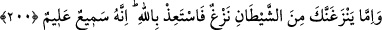

“Ve câhillerden yüz çevir.” Beyinsizlerle oturup kalkma, onların beyinsizliklerine
beyinsizce karşılık verme. Onlarla münazara ve münakaşadan sakın. Onlara karşı
hilimle muamele et. Sana yaptıkları kötülükleri görmezlikten gel. Çünkü bazı cahiller,
teşvik ve korkutma sırasında beyinsizliğe, eziyet etmeye, gülmeye ve alay etmeye
kalkışabilirler. Bu sebeple Allah Teâlâ Habibi’ne bu ayetin sonunda eziyetlere
tahammülü ve cefa edenlere hilimle muameleyi emretmektedir. Böylece bu ayetin
insanlarla olan muamelelerde uyulması gereken güzel ahlakı ihtivâ ettiği
anlaşılmaktadır. Rasûlullah (s.a.v.), kötü söz söylemez, çirkin iş yapmaz, çarşı pazarda
bağırmaz ve kötülüğe kötülükle karşılık vermez, affeder ve bağışlardı.[144] (Kevâşî’nin
tefsîrinde böyle geçmektedir.)
Rivayete göre bu ayet inince Rasûlullah (s.a.v.): “Ya Rab! İnsanda öfke (gadab)
varken bu nasıl mümkün olabilir?” diye içinden geçirdi. Bunun üzerine şu ayet nâzil
oldu:
200. Eğer şeytanın fitlemesi seni dürterse hemen Allah’a sığın. Çünkü O,
işitendir, bilendir.
“Ne zaman şeytandan kötü bir düşünce seni dürtüklerse,” “”, dürtmek ve
batırmak, iki kimsenin arasını bozmak, kışkırtmak ve vesvese vermek mânâlarına gelir.
Ayette şeytanın insanlara vesvese verip onları günahlara kışkırtması, bir kimsenin
bindiği hayvanı dürtüklemesine benzetilmiştir. Ayetin mânâsı şöyledir: Şeytan yönünden
bir vesvese, seni sana emredilenin aksine öfke ve benzeri şeylere zorlarsa onun
şerrinden “hemen Allah’a sığın.” onun şerrinden Allah Teâlâ’ya ilticâ et, O’na sarıl.
“Çünkü O,” senin sözlü olarak kendisine sığınmanı “işitendir,” kalben O’na tazarru ve
niyazını “bilendir.” Böylece onun şerrinden seni korur.
el-Bahru’l-Muhit’te şöyle denilmiştir: Ayet Allah Teâlâ’nın “işitici ve bilici”
olduğunu bildiren iki sıfatla sona ermiştir. Bunun sebebi, mânâsı düşünülmediği zaman
dil ile yapılan istiazenin fazla bir fayda sağlamayacağını belirtmektir. Buna göre mânâ:
“Allah sözleri işitendir, kalblerde gizli olanı bilendir.” şeklindedir.
Ayette geçen “şeytan”dan maksadın asıl şeytan (İblis) mı, yoksa sadece her insanın
kendi şeytanı (karîni) mi olduğunda ihtilaf edilmiştir. Fakat bizim hakkımızda onun
kendi şeytanımız olduğu âşikârdır. Çünkü, Allah Teâlâ: “Kim Rahman’ın zikrinden
gafil olursa, yanından ayrılmayan bir şeytanı ona musallat ederiz.” (ez-Zuhruf, 36)
buyurmaktadır. Rasûlullah (s.a.v.) hakkında ise İblîs mânâsındadır. Bizim gibi sıradan
insanlara, ancak kendi yanından ayrılmayan ve peşinde olan şeytan eziyet eder. Akıllı
kimse kendisine eziyet etmeyenden Allah’a sığınmaz.
Rasûlullah (s.a.v.)’in yanından ayrılmayan şeytanı ise müslüman olmuştur. Dolayısıyle